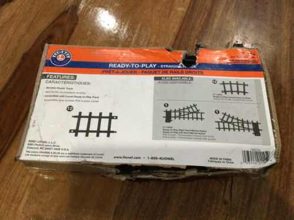
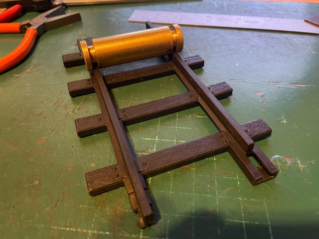

Gauge 2 Track
For a
very long time there has been no source of track anywhere in the world
on which to run Gauge 2 models. Historically, there were several sources of
track before 1914 and small surviving sections surfaced from time to time, but
not enough to run live steam models. Covid provided the solution
to this problem, along with a large quantity of heavily used
Flat Bottom rail from an abandoned G3 railway. This rail was
laboriously straightened, trimmed, and attached to 2000 hand
made hardwood sleepers during the Covid lockdown, creating the
20' x 50' 'swimming pool railway'.
'Abergavenny'
(C. Butcher & Co., 1910) rounds a curve on the
first Gauge 2 model railway in modern times, August
2022.
The track was made by attaching the flat bottom rail, which has
a very similar section to LGB and is 0.33" high, to hardwood
sleepers using stainless self tapping screws. It was this track
that was subsequently uprooted and taken to G1MRA's 75th
anniversary bash in an aircraft hangar at Bicester, UK, in
October 2022.

Carson Precursor No. 1911 'Carson' waits with Mr
WH Jubb's 'Atlantic' for their turn on the main line, the
first Gauge 2 live steam locomotives to run in public
anywhere in the world since the Great War, Bicester, 2022.
There was G2 tinplate, from Marklin for
instance. But the radii were ferocious, so much so that the curves
are banked! More recently Alan Middleton in Australia has produced
modern tinplate in Gauge 2 with an 8' radius. An oval of this was
given to me and is now in the care of the Gauge 1 tinplate group.
Here it is at G1MRA's Swindon AGM in October, 2024:

(Saint George with a previously unknown '460', totally complete.)
Before 1914, Bassett Lowke supplied 'Lowko', or 'hollow
rail' track in Gauges 1 and 2.

(From the 1911 Bassett Lowke catalogue). Click
to see larger version.
The current Gauge 2 exhibition layout is built with this, salvaged
from numerous sources. Almost every piece has required restoration
and some is re-gauged from G1, which used identical components.
Here it is running in public for the first time as a complete
'Gauge 2 Model Railway' at the Train Collector's show in
Leicester, UK, 2nd November, 2024: (Perhaps the first Gauge 2
model railway, as opposed to running track, to be shown in public
since the disastrous Brussels Fire of 1910).

Video here: the
Gauge 2 Model Railway
The points (switches!) on this layout are genuine surviving BL Gauge 2 parts and this is the first time they've been used in combination. The hollow rail is really a tinplate era design and the 'scale' rail will give better running, though may be tight for some tinplate stock.

Some of the running line is re-gauged from Gauge 1.
However all the point work (See below) is genuine surviving gauge
2 including two superb crossovers and the magnificent 3 way switch
in the foreground, passed on by Ned Williams from Francis Ashley's
collection. The Lowko rail is either brass or steel and either way
very prone to damage. There's been much restoration and
cannibalisation to achieve the result in the picture!
Next, there's Bassett Lowke's 'scale' track,
which uses bullhead section rail 0.234" high with cast
chairs and genuine wooden keys.

(from the 1911 Bassett Lowke catalogue)
A considerable number of straight 3' long sections
have survived in very good condition (many had been re-gauged to
Gauge 0 !) and these are used as sidings in exhibition layouts. A
large amount of the same track in G3 also survives and It's
intended to re-gauge this for use in a future steam capable
portable layout.

Sidings at Gaydon using 3' lengths of 'scale' rail
There are 24 sleepers to a 3' length and the surviving track is
always mounted on battens. Here's a piece of genuine original B-L
'scale' track in G2. The components are probably identical in
Gauges 1 and 3.

The bullhead rail is 0.236"
high, bigger than G1MRA code 200 rail. Cliff Barker's code
250 0.25" brass rail would be a good match.
Here's a piece of Cliff Barker rail slotted into a
section of genuine G2 track (on the left):

(Note the chairs on this piece are 0.63" wide -
probably intended for G3.) BL track was very hand made and
varies one piece to another.
The Condition of this rail indicates
that it's been outside for quite a while. The timbers were heavily
creosoted and the hardwood is probably better than anything
available today. There is some excellent pointwork surviving,
including a double slip from Frances Ashley and a scissors double
crossover from Tony Hobson's collection:
Here are some Gauge 2 pointwork panels that have been
handed down to me:

The scissors crossover at centre came to me courtesy of Peter
Spoerer who in turn acquired it from the late Tony Hobson. It's
over 5' long and it's not clear it has ever actually been used,
but it has spent most of it's life out of doors! Despite that,
it's perfectly usable, as is the double slip next to it. Next to
the slip is a plain turnout, showing the considerable amount of
space needed for a Gauge 2 layout.
Nearest the camera is a length of 3D printed track and a 3'
section of original Bassett Lowke 'scale' track. I hope to utilise
these exquisite track panels in a future indoor G2 layout.
Up to now, the demonstration G2 layout has been
improvised on each occasion but now a standard for using 'Lowko'
track has emerged using a double track running rail, sidings and
in a larger version a genuine B-L Gauge 2 turntable and loco
depot.
This is the track plan as currently operating using entirely
'Lowko' track. This version of the layout requires about 24
trestle tables. (The inner section is used for the Gauge 1
tinplate layout)

The
hardwood sleepers so laboriously made for the Swimming Pool
Railway are approaching the end of their useful life and a
replacement is needed. 3D printing may provide a solution:

The Bassett Lowke 'Precursor' 4-4-0 standing on new dual
gauge track using Cliff Barker 0.250" rail and sleepers with
integral chairs 3D printed in ABS. Dual Gauge point work is
going to be a real challenge, but commercial 3D printing is coming
of age and this construction is becoming affordable. The long term
durability of the ABS material used in 3D FDM (filament) printing
is also unknown, but of course you can always print another panel!
ABS printing on this scale is not really ideal for home printing,
but online bureau services offer production of designs like this
on a very affordable basis. The resulting track, which can also
use G1MRA rail, is very competitive with commercially produced G1
track.

Dual Gauge sleepers designed in Turbocad v.16 for filament
printing in ABS.

Panel of 20 Gauge 1/Gauge 2 sleepers for Cliff
Barker 0.25" rail.

